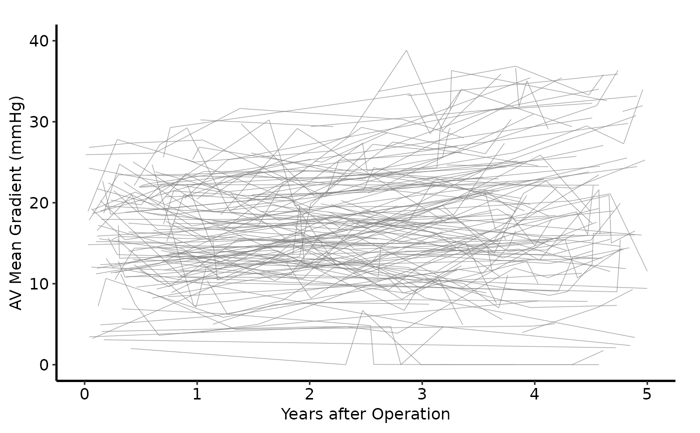
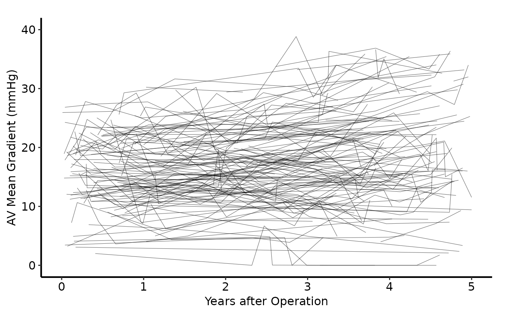
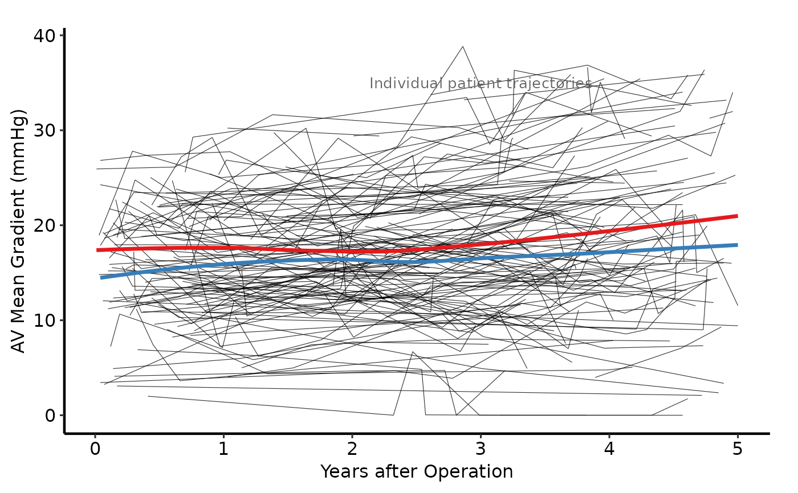
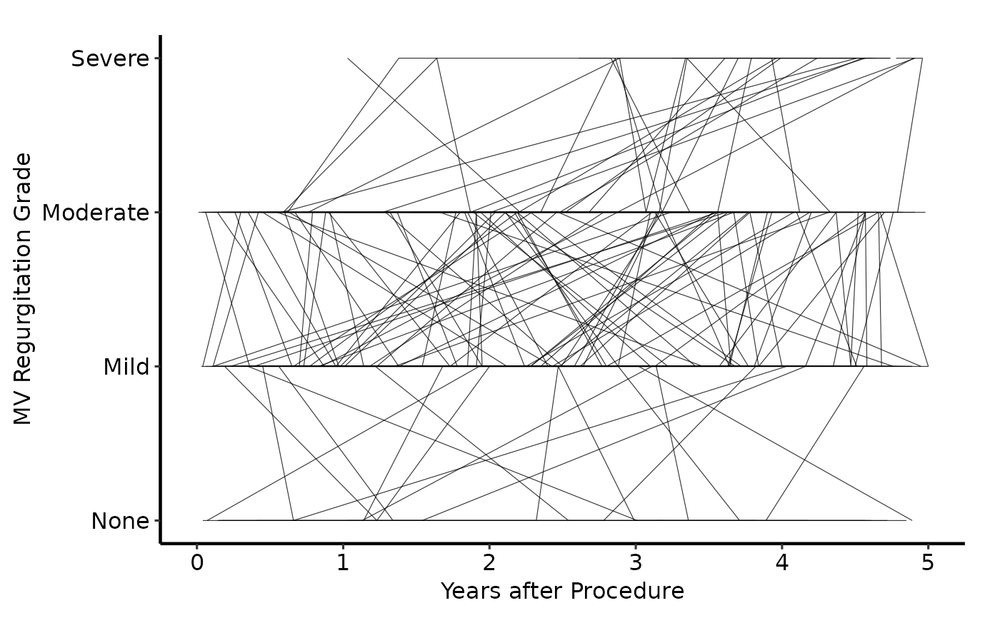

Draws one trajectory line per subject over time. Optionally stratifies line
colour by a grouping variable and overlays a LOESS smooth (or other
smoother) per group. Returns a bare ggplot object for composition with
scale_colour_*, labs(), annotate(), and hvti_theme().
Usage
spaghetti_plot(
data,
x_col = "time",
y_col = "value",
id_col = "id",
colour_col = NULL,
line_colour = "grey50",
line_width = 0.2,
alpha = 0.6,
add_smooth = FALSE,
smooth_method = "loess",
smooth_se = FALSE,
smooth_width = 1.2,
y_labels = NULL
)Arguments
- data
Data frame; one row per observation per subject.
- x_col
Name of the time column. Default
"time".- y_col
Name of the outcome column. Default
"value".- id_col
Name of the subject identifier column used as the
groupaesthetic for line continuity. Default"id".- colour_col
Name of the column to map to line colour, or
NULLfor a single colour. DefaultNULL.- line_colour
Fixed line colour used when
colour_col = NULL. Default"grey50".- line_width
Line width for individual trajectories. Default
0.2.- alpha
Transparency of individual lines. Default
0.6.- add_smooth
Logical; overlay a smoother per group (or overall when
colour_col = NULL)? DefaultFALSE.- smooth_method
Smoothing method, e.g.
"loess"(default) or"lm".- smooth_se
Logical; show confidence ribbon around smooth? Default
FALSE.- smooth_width
Line width for the smooth overlay. Default
1.2.- y_labels
Named numeric vector mapping category names to y positions for an ordinal axis, e.g.
c("None" = 0, "Mild" = 1, "Moderate" = 2, "Severe" = 3). When supplied,scale_y_continuous()uses these as breaks and labels. DefaultNULL(standard numeric axis).
Value
A ggplot2::ggplot() object.
Details
Unstratified use (colour_col = NULL): all lines share the same colour,
set via line_colour. Override with scale_colour_identity() or add a
single-value scale_colour_manual().
Stratified use (colour_col = "group"): lines are mapped to
colour_col; add scale_colour_manual() or scale_colour_brewer() to
control the palette.
Ordinal y-axis (y_labels): supply a named numeric vector
(c("None" = 0, "Mild" = 1, ...)) to replace numeric tick marks with
category labels — matching plot_9 in the template.
Examples
dta <- sample_spaghetti_data(n_patients = 150, seed = 42)
# --- Unstratified (all lines grey) ---------------------------------------
spaghetti_plot(dta) +
ggplot2::scale_x_continuous(breaks = seq(0, 5, 1)) +
ggplot2::scale_y_continuous(breaks = seq(0, 40, 10)) +
ggplot2::coord_cartesian(xlim = c(0, 5), ylim = c(0, 40)) +
ggplot2::labs(x = "Years after Operation",
y = "AV Mean Gradient (mmHg)") +
hvti_theme("manuscript")

# --- Stratified by group with scale_colour_manual ------------------------
spaghetti_plot(dta, colour_col = "group") +
ggplot2::scale_colour_manual(
values = c(Female = "firebrick", Male = "steelblue"),
name = NULL
) +
ggplot2::scale_x_continuous(breaks = seq(0, 5, 1)) +
ggplot2::scale_y_continuous(breaks = seq(0, 40, 10)) +
ggplot2::coord_cartesian(xlim = c(0, 5), ylim = c(0, 40)) +
ggplot2::labs(x = "Years after Operation",
y = "AV Mean Gradient (mmHg)") +
hvti_theme("manuscript")
#> Warning: No shared levels found between `names(values)` of the manual scale and the
#> data's colour values.
#> Warning: Ignoring empty aesthetic: `colour`.

# --- With LOESS smooth overlay per group ---------------------------------
spaghetti_plot(dta, colour_col = "group", add_smooth = TRUE) +
ggplot2::scale_colour_brewer(palette = "Set1", name = NULL) +
ggplot2::scale_fill_brewer(palette = "Set1", guide = "none") +
ggplot2::scale_x_continuous(breaks = seq(0, 5, 1)) +
ggplot2::labs(x = "Years after Operation",
y = "AV Mean Gradient (mmHg)") +
ggplot2::annotate(
"text", x = 3, y = 35,
label = "Individual patient trajectories",
size = 3.5, colour = "grey40"
) +
hvti_theme("manuscript")
#> Warning: Ignoring empty aesthetic: `colour`.

# --- Ordinal y-axis (MR grade) -------------------------------------------
# Simulate an ordinal outcome (0-3 scale)
dta_ord <- dta
dta_ord$value <- round(pmin(3, pmax(0, dta$value / 12)))
spaghetti_plot(
dta_ord,
colour_col = "group",
y_labels = c(None = 0, Mild = 1, Moderate = 2, Severe = 3)
) +
ggplot2::scale_colour_manual(
values = c(Female = "firebrick", Male = "steelblue"),
name = NULL
) +
ggplot2::coord_cartesian(xlim = c(0, 5), ylim = c(0, 3)) +
ggplot2::labs(x = "Years after Procedure",
y = "MV Regurgitation Grade") +
hvti_theme("manuscript")
#> Warning: No shared levels found between `names(values)` of the manual scale and the
#> data's colour values.
#> Warning: Ignoring empty aesthetic: `colour`.

# --- Save ----------------------------------------------------------------
if (FALSE) { # \dontrun{
p <- spaghetti_plot(dta, colour_col = "group") +
ggplot2::scale_colour_manual(
values = c(Female = "firebrick", Male = "steelblue"), name = NULL
) +
ggplot2::labs(x = "Years", y = "AV Mean Gradient (mmHg)") +
hvti_theme("manuscript")
ggplot2::ggsave("spaghetti.pdf", p, width = 11, height = 8.5)
} # }